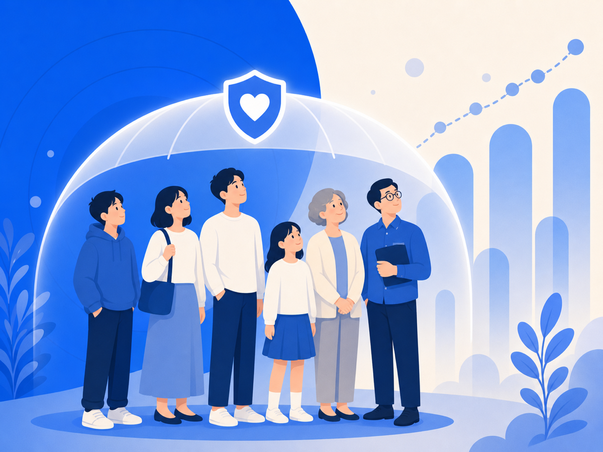

사이버폭력은 다시 늘고 있어요 — 당신만의 일이 아니에요


자기 이름이나 가게 이름을 검색하다 처음 그 글을 발견한 순간, 기억나세요? 심장이 쿵 내려앉고, 그 뒤로 며칠을 그 문장에 붙들려 있죠. 혹시 지금 겪는 일이 "나한테만 일어난 이상한 불운" 같나요? 그래서 더 외롭고, 누구한테 말 꺼내기도 망설여지고요. 먼저 말씀드릴게요. 그건 당신만의 일이 아니에요.
악플이나 사이버폭력은 가끔 뉴스에 나오는 특별한 사건처럼 보여요. 그런데 숫자는 좀 다르게 말해요.
통계가 말해주는 건 '당신 혼자가 아니다'예요
방송통신위원회와 한국지능정보사회진흥원의 2024년 사이버폭력 실태조사에서, 청소년 10명 중 4명이 사이버폭력을 겪었다고 답했어요. 전년보다 또 올랐고, 성인 쪽 증가폭은 더 컸어요.
10명 중 4명이에요. 교실에서, 회사에서, 옆자리 누군가도 같은 걸 겪고 있다는 뜻이에요. 당신이 유독 약하거나 운이 나쁜 게 아니라, 많은 사람이 같은 환경에 놓여 있는 거예요.
가해자와 피해자가 칼같이 나뉘지도 않아요
같은 조사에서 눈에 띄는 게 있어요. 피해와 가해를 동시에 겪은 사람이 적지 않았다는 거예요. 온라인에선 공격받은 사람이 휩쓸려 되받아치기도 하고, 단톡방이나 댓글창 분위기에 떠밀려 경계가 흐려지기도 해요.
그래서 "나쁜 사람 하나가 착한 사람 하나를 괴롭힌다"는 그림만으로는 설명이 잘 안 돼요. 더 중요한 건, 감정이 확 끓어오르기 전에 한 번 멈출 수 있느냐예요.
그래서 오늘 할 수 있는 건
진짜 문제는 '나쁜 댓글 하나'가 아니에요. 혐오, 조롱, 퍼나르기, 다시 보기가 한 화면 안에서 끝없이 반복되는 환경이에요. 그 환경에 매번 맨몸으로 부딪히지 않아도 돼요.
오늘은 딱 하나만요. 자꾸 들여다보게 되는 그 화면에서, 잠깐 멀어져 보세요. 통계가 보여주는 건 결국 이거예요 — 당신은 혼자가 아니고, 그러니 혼자 다 감당하지 않아도 돼요.
이 글은 일반 정보예요. 구체적인 법률·의료 판단은 전문가와 상의하세요. 많이 힘들 땐 자살예방상담 109(24시간)가 있어요.